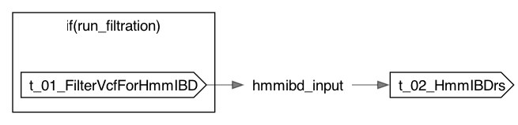

HmmIBD
HmmIBD
- author
- Jonn Smith
- description
- Infer identity-by-descent (IBD) from a VCF. Step one pre-filters the VCF with bcftools (mask low-depth genotypes, recompute AN/AC/AF, trim unrepresented alleles/sites) into a BCF; step two runs hmmibd-rs (the Rust reimplementation of hmmIBD) on that BCF. The hmmibd-rs IBD segments and per-pair IBD fractions are returned as workflow outputs. Every hmmibd-rs tuning parameter is exposed with its upstream default so runs are fully configurable from Terra.
- outputs
- {'ibd_segments': 'Per sample-pair IBD/non-IBD segments (
.hmm.txt); empty when the HMM is skipped via a bcf-to-bin mode', 'ibd_fraction': 'Per sample-pair IBD-fraction summary ( .hmm_fract.txt); empty when suppress_frac=true or a bcf-to-bin mode is used', 'binary_genotypes': 'Binary genotype file(s) ( *.bin); populated only when bcf_to_bin_file or bcf_to_bin_file_by_chromosome is set', 'filtered_bcf': 'The pre-filtered BCF that hmmibd-rs was run on'}
Inputs
Required
input_vcf(File, required): Genotype input. With run_filtration=true: a VCF/BCF to filter then analyze. With run_filtration=false: an already-prepared input fed straight to hmmibd-rs — a VCF/BCF (hmmibd_input_format='bcf'/'vcf') or an hmmIBD text genotype table (hmmibd_input_format='hmmibd_table'). (required)prefix(String, required): Basename / sample-set name for all outputs. (required)
Optional
bad_samples_file(File?): Optional list of sample IDs to exclude (-b). (default: none)bcf_filter_config(File?): Optional TOML BCF filter config (--bcf-filter-config). (default: none)buffer_size_frac(Int?): Fraction-output write buffer in bytes (--buffer-size-frac). (default: none; hmmibd-rs uses 8Kb)buffer_size_segments(Int?): Segments-output write buffer in bytes (--buffer-size-segments). (default: none; hmmibd-rs uses 8Kb)data_file2(File?): Optional second-population genotypes (-I). (default: none)filt_max_tmrca(Float?): Drop pairs with k_rec above this threshold (--filt-max-tmrca). (default: none)filt_min_seg_cm(Float?): Drop output segments shorter than this many cM (--filt-min-seg-cm). (default: none)freq_file1(File?): Optional allele-frequency file for population 1 (-f). (default: none)freq_file2(File?): Optional allele-frequency file for population 2 (-F). (default: none)genome(File?): Optional genome/recombination-map spec (--genome); mutually exclusive with rec_rate. (default: none)good_pairs_file(File?): Optional list of sample pairs to analyze (-g). (default: none)k_rec_max(Float?): Cap on inferred generations (-n). (default: none; hmmibd-rs uses Inf = no cap)populations_file(File?): Optional sample-to-population file for per-population AN/AC/AF (bcftools +fill-tags -S). (default: none)rename_annots_tsv(File?): Required when keep_original_af=true: old-namenew-name TSV for bcftools annotate --rename-annots. (default: none) t_01_FilterVcfForHmmIBD.convert_runtime_attr_override(RuntimeAttr?)t_01_FilterVcfForHmmIBD.filter_runtime_attr_override(RuntimeAttr?)t_02_HmmIBDrs.runtime_attr_override(RuntimeAttr?)
Defaults
bcf_read_mode(String, default="dominant-allele"): BCF genotype read mode: dominant-allele | first-ploidy | each-ploidy. (default: dominant-allele)bcf_to_bin_file(Boolean, default=false): Convert the BCF to a single binary genotype file and skip the HMM (--bcf-to-bin-file). (default: false)bcf_to_bin_file_by_chromosome(Boolean, default=false): Convert the BCF to one binary genotype file per chromosome and skip the HMM (--bcf-to-bin-file-by-chromosome). (default: false)biallelic_only(Boolean, default=true): Restrict to biallelic sites. Recommended true: multiallelic sites (especially indels) can exceed hmmibd-rs --max-all and crash it until patched. (default: true)eps(Float, default=0.001): Genotyping error rate (--eps). (default: 0.001)filt_ibd_only(Boolean, default=false): Omit non-IBD segments (--filt-ibd-only). (default: false)filter_extra_args(String, default=""): Extrabcftools viewfilters added to the final filtration view (e.g. "-e MAF<0.01"); whitespace-separated, no internal spaces. Only applied when run_filtration=true. (default: empty)fit_thresh_dk(Float, default=0.01): Convergence threshold on k (--fit-thresh-dk). (default: 0.01)fit_thresh_dpi(Float, default=0.001): Convergence threshold on pi (--fit-thresh-dpi). (default: 0.001)fit_thresh_drelk(Float, default=0.001): Convergence threshold on relative k (--fit-thresh-drelk). (default: 0.001)hmmibd_input_format(String, default="bcf"): Only used when run_filtration=false: format of input_vcf — 'bcf' or 'vcf' (read via --from-bcf) or 'hmmibd_table' (hmmibd-rs text genotype table). (default: bcf)keep_original_af(Boolean, default=false): Preserve the original allele-frequency annotations (via rename_annots_tsv) before recomputing AN/AC/AF. (default: false)mask_gq0_genotypes(Boolean, default=false): Also set GQ0 genotypes to missing (beyond the DP < min_depth mask). Reproduces the GATK GQ0-hom-ref fix (issue #7792 / PR #8741) for VCFs from pre-4.6.0.0 GenotypeGVCFs or GnarlyGenotyper, where no-/low-confidence hom-refs are 0/0:GQ=0 instead of ./. Conservative (drops all GQ0 hom-refs). Only applied when run_filtration=true. (default: false)max_all(Int, default=8): Maximum unique alleles per site (--max-all). (default: 8)max_discord(Float, default=1.0): Maximum discordance fraction (--max-discord). (default: 1.0)max_iter(Int, default=5): Max EM iterations (-m). (default: 5)max_variants(Int, default=0): Optional cap on the number of variants; when >0, the filtered callset is thinned evenly across the genome to at most this many. (default: 0 = no limit)min_depth(Int, default=5): Genotypes with FORMAT/DP below this value are set to missing. (default: 5)min_discord(Float, default=0.0): Minimum discordance fraction (--min-discord). (default: 0.0)min_inform(Int, default=10): Minimum informative sites per pair (--min-inform). (default: 10)min_snp_sep(Int, default=5): Minimum bp between SNPs (--min-snp-sep). (default: 5)num_threads(Int, default=0): Threads; 0 = all CPUs (--num-threads). (default: 0)par_chunk_size(Int, default=120): Pairs-per-chunk (mode 0) or samples-per-chunk (mode 1) (--par-chunk-size). (default: 120)par_mode(Int, default=0): Parallelization mode: 0 small / 1 large sample sets (--par-mode). (default: 0)rec_rate(String, default="0.00000074"): Constant recombination rate per generation per bp (-r); ignored when genome is set. (default: 0.00000074)run_filtration(Boolean, default=true): Filter input_vcf first via the FilterVcfForHmmIBD workflow (bcftools). Set false to feed input_vcf straight to hmmibd-rs. (default: true)split_multiallelics(Boolean, default=true): Split multiallelics into biallelic records (bcftools norm -m-any) to recover SNP alleles from multiallelic/spanning-deletion sites instead of dropping them. (default: true)suppress_frac(Boolean, default=false): Suppress the per-pair fraction output (--suppress-frac); leaves ibd_fraction empty. (default: false)variant_types(String, default="snps"): Which variant types to keep: 'snps', 'indels', or 'both'. SNPs are the standard hmmIBD marker set. (default: snps)t_02_HmmIBDrs.extra_args(String, default="")
Outputs
ibd_segments(Array[File])ibd_fraction(Array[File])binary_genotypes(Array[File])filtered_bcf(File?)
Dot Diagram
